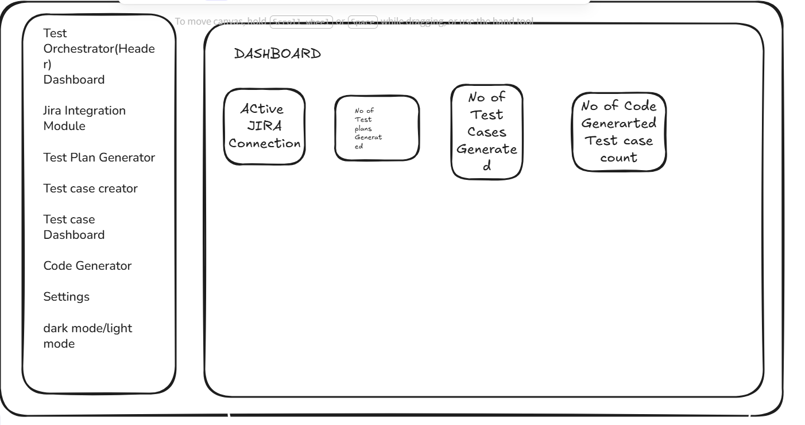
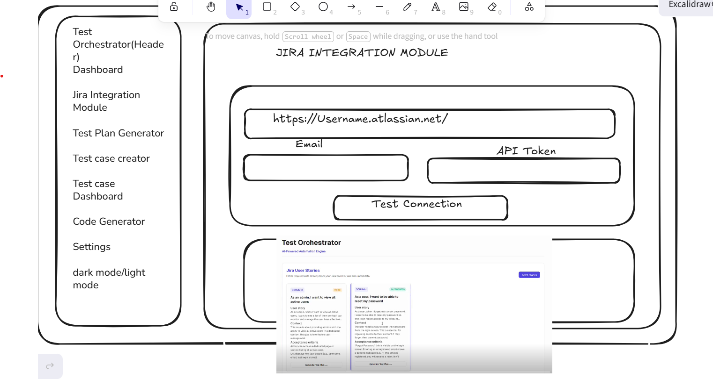
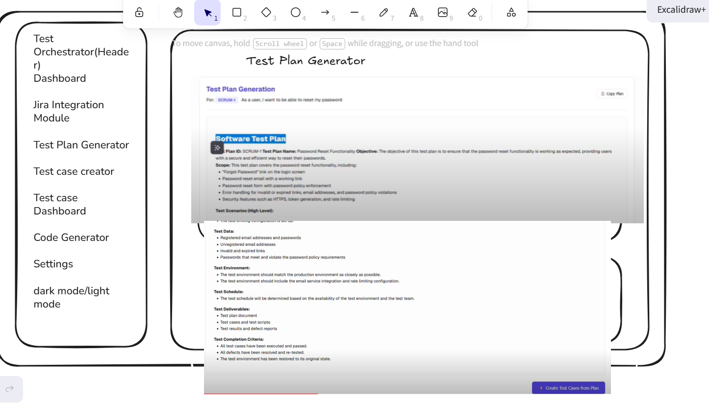
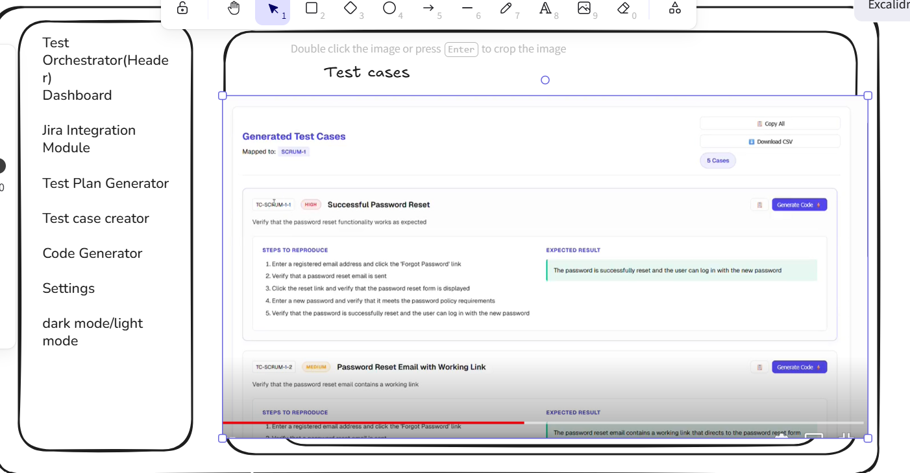

n8n Advanced RAG
Upload documents → vector store → chat with re-ranked answers (Qdrant, Mistral, Cohere, Groq).

 View on GitHub
View on GitHub
QA · AI · Automation
Three AI agents for test planning, test cases, document Q&A, and automation code.
Upload documents → vector store → chat with re-ranked answers (Qdrant, Mistral, Cohere, Groq).
View on GitHub
Paste a user story → get 10+ test cases in one HTML table.

 View on GitHub
View on GitHub
Jira stories → AI test plan → test cases → Playwright / Selenium code. Full web app (React + FastAPI).



